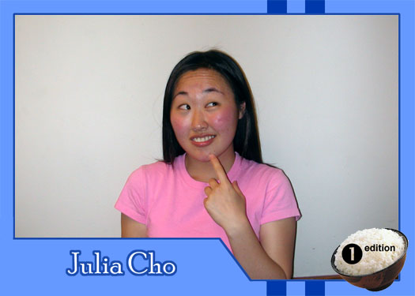

|
Why did you get involved with Theatre Rice? As a freshman, i had never heard of an Asian American theatre group before. i wanted to be able to share the stage with my Asian American brethren. And each semester must have been worthwhile, because i've been here ever since. What do you hope to gain from TR? Another fun-filled semester with new and old friends, a sense of accomplishment and contentment, and the satisfaction of knowing that all this frickin' work has been worth it. Who are your role models? i look up to my mother, my father, and my sister. i admire people who stay true to their beliefs while never dismissing others', people who are able to recognize and cultivate their artist selves, and people who love to dance and get their groove on as much as i do. If you had a quote that defines how you live life, what would it be? Well, i try to live by this quote. And while i don't want to disregard the fact that we all get sad sometimes, as the French actress Jeanne Moreau once said . . . "To be sad is boring." What message would you give to the future generations of Theatre Rice? This group has really become its own entity over the years. It's important to keep in mind not only what Rice can do for you but what you can do for Rice. (Did i just totally bite off a JFK quote?) And of course, don't forget to have fun! |